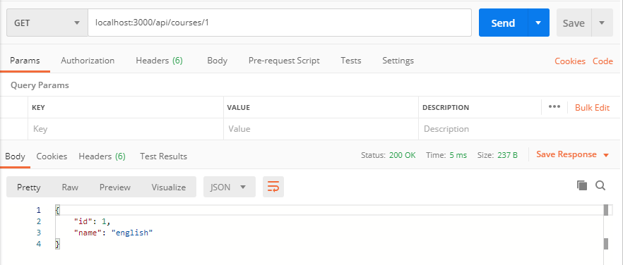

What Is REST?
Representational State Transfer
Architectural style for distributed hypermedia systems and was first presented by Roy Fielding in 2000
Relies on a stateless, client-server protocol, mostly HTTP
Treats server objects as resources that can be created or destroyed
Can be used by virtually any programming language[1]
Like any other architectural style, REST also does have it’s own 6 guiding constraints which must be satisfied if an interface needs to be referred as RESTful.[2] These principles are :
1.Client–server
2.Stateless
3.Cacheable
4.Uniform interface
5.Layered system
6.Code on demand (optional)
I will be confused when looking at so many CS terminology. To better explain, in my oppinon, API is the messenger between the client and the user. REST lets us use HTTP request to format our messages. Therefore, RESTful APIs refers to APIs that conform to the REST constraints.
As I mentioned above, REST lets up use HTTP request. So it's important to know what requests can users do. The mostly used HTTP methods are listed below.
HTTP Methods:
GET: Retrieve data from a specified recourse
POST: Submit data to be processed to a specified recourse
PUT: Update a specified resource
DELETE: Delete a specified resourse
Next is am example of RESTful api created by me:
Example
const express = require('express');
const app = express();
const courses = [
{id:1, name:'english'},
{id:2, name:'math'},
{id:3, name:'computer'},
]
app.get('/', (req, res) => {
res.send('hello world!!!');
});
app.get('/api/courses', (req,res) => {
res.send(courses);
});
app.get('/api/courses/:id', (req, res) => {
let course = courses.find(c => c.id === parseInt(req.params.id));
if(!course) res.status(404).send('the course is not found')//404
res.send(course);
});
const port = process.env.PORT || 3000;
app.listen(port, ()=> console.log(`listening on port ${port}`));
I created a 'courses' object, and there are three courses in it with IDs and names.
This is just a simple part of it, and realizes the function to search for courses. For example, if I want to search for the course with id '1', I can enter 'http://localhost:3000/api/courses/1' in the Postman(which will be talked about next chapter) and the result will be shown:
